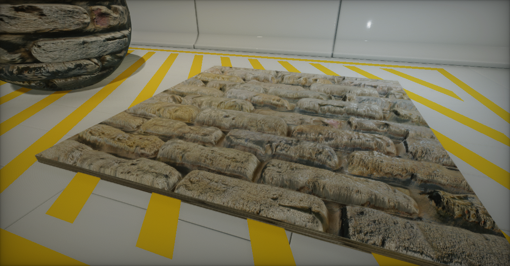
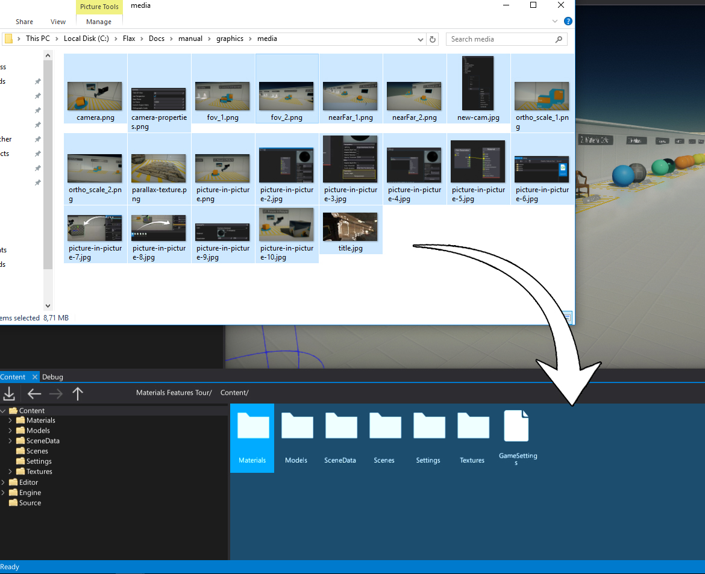
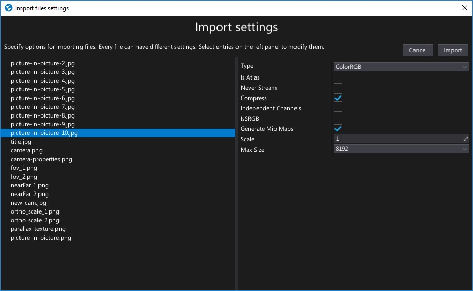
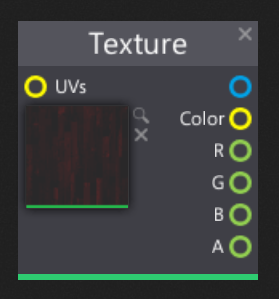
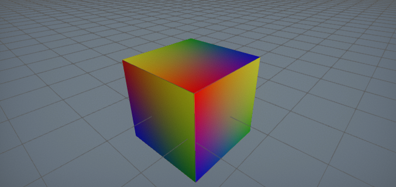

Textures

Textures are assets that contain an image made of pixel-data. They are mainly used in materials to cover the surfaces.
For example, texture can contain color information or material roughness variation so using it in material shader adds more realism.
Textures can be also used outside the materials. For instance in UI or via direct CPU calculations. For more information about the C# scripting see Texture class page in the C# API documentation.
Supported file types
Flax Engine supports importing the following list of file types as textures:
.png.jpg.jpeg.bmp.gif.tga.tif.tiff.dds.hdr.raw
Note
Flax imports only the first frame of animated image files, such as animated gifs or PNGs. They don't animate in Flax; they appear as static images.
Note
For documentation related to cube textures check out this page.
Note
Files of type .RAW are assumed to contain 16-bit grayscale raw unsigned normalized values in little-endian byte order (it must be a square, width equals height). You can use them to import heightmaps for your terrain to minimalize quality loss during generating terrain from asset exported by the external tool (choose suggested HdrRGBA format with no compression).
Importing a texture
The easiest way to import one or more textures is to drag them from Explorer to the Content window.

Alternatively, you can use Import button in a Content window toolbar and then select files to import.
After choosing the files Import file settings dialog shows up. It's used to specify import options per texture. In most cases the default values are fine and you can just press the Import button.

Note
- Flax automaticly detects imported texture type based on it's name. For instance: Chair_Normal.png will be detected as a normal map and Chair_AO.png will be detected as a grayscale texture (as it contains single channel ambient occlusion data).
- Using Import file settings dialog you can select more than one texture at once (or use Ctrl+A to select all) and specify import options at once.
Every texture can be reimport (relative path to the source file is cached) and import settings modified using Texture Window.
For more information about textures import settings read dedicated documenation page Textures Import Settings.
Using textures
To use your texture asset in a material simply drag and drop it into the material surface graph and use Texture node for sampling it.

To learn more about materials and using textures for rendering go to Materials Basics page.
Procedural textures

Flax API exposes several methods that enable you to create and use procedural textures from your code. To learn how to use it see the related tutorial here: How to create a procedural texture.